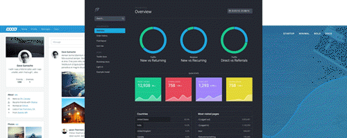

Bootstrap
Build responsive, mobile-first projects on the web with the world’s most popular front-end component library.
Bootstrap is an open source toolkit for developing with HTML, CSS, and JS. Quickly prototype your ideas or build your entire app with our Sass variables and mixins, responsive grid system, extensive prebuilt components, and powerful plugins built on jQuery

Installation
Include Bootstrap’s source Sass and JavaScript files via npm, Composer or Meteor. Package managed installs don’t include documentation, but do include our build system and readme.
$ npm install bootstrap$ gem install bootstrap -v 4.2.1_____________
BootstrapCDN
When you only need to include Bootstrap’s compiled CSS or JS, you can use BootstrapCDN
CSS only
JS, Popper.js, and jQuery
_____________
Official Themes
Take Bootstrap 4 to the next level with official premium themes—toolkits built on Bootstrap with new components and plugins, docs, and build tools. .
_____________